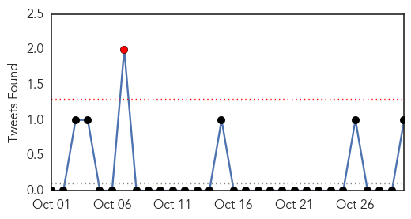

30 Day Trends
Web: 0 alerts, 0 warnings
Twitter: 1 alerts, 0 warnings
Top Articles:
- 0.995
- Flu season may be early this year
- 0.992
- 78.1% NY State Healthcare Personnel Vaccinated Against Influenza in 2013-2014 – Mobile Health Influenza Vaccination Map Shows
- 0.991
- As Flu Season Approaches Officials Call For Vaccinations
- 0.947
- New Influenza Virus Affects Cattle, Pigs
- 0.946
- Let’s end the flu-shot debate for Alberta health-care workers
- 0.897
- Plan to Minimize Spread of Flu and Legal Risks in the Workplace during Flu Season
- 0.845
- Google data could improve forecasting of influenza levels
- 0.806
- Today's stories from newspapers in Caledon
Top Tweets:
- 0.935
- RT: The vaccine used in seasonal flu jabs cannot give you flu, it does not contain live influenza virus http://t.co/Vaw78vIHcn
Web/News Articles

Tweets
Article Locations

Article Confidences